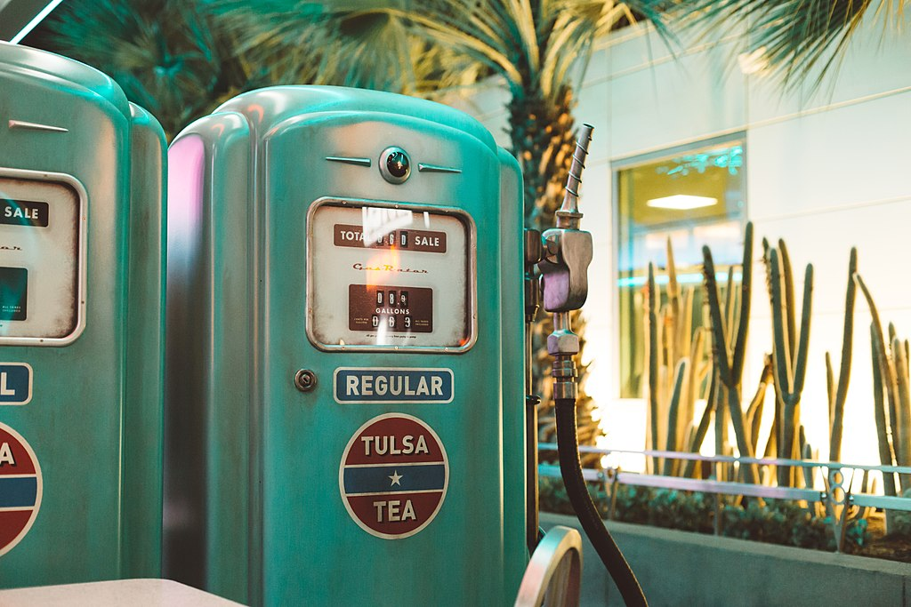

Gas Station
This example models a gas station and cars that arrive at the station for refueling.
Covers:
- Depletable Resources
- Process Interaction, in particular waiting for other processes
The gas station has a limited number of fuel pumps, and a fuel tank that is shared between the fuel pumps. The gas pumps are modeled as Resource. The shared fuel tank is modeled with a DepletableResource.

Vintage Gas Pump, (CCO 1.0)
.jpg){kind=link}
Vehicles arriving at the gas station first request a fuel pump from the station. Once they acquire one, they try to take the desired amount of fuel from the fuel pump. They leave when they are done.
The gas stations fuel level is regularly monitored by gas station control. When the level drops below a certain threshold, a tank truck is called to refuel the gas station itself.
The example is a true classic and its implementation below was adopted from salabim's and SimPy's gas stations.
To begin with, we declare required dependencies. Only kalasim (for obvious reasons) and kravis (for visualization) are needed here.
//@file:Repository("*mavenLocal")
//@file:DependsOn("com.github.holgerbrandl:kalasim:0.7-SNAPSHOT")
// TODO Update to v0.8
@file:DependsOn("com.github.holgerbrandl:kalasim:0.7.90")
@file:DependsOn("com.github.holgerbrandl:kravis:0.8.1")
Next, we import required classes.
import org.kalasim.*
import org.kalasim.monitors.printHistogram
import org.koin.core.component.inject
import org.koin.core.qualifier.named
Define configuration and constants to be use in simulation model are grouped into a dedicated section.
val GAS_STATION_SIZE = 200.0 // liters
val THRESHOLD = 25.0 // Threshold for calling the tank truck (in %)
val FUEL_TANK_SIZE = 50.0 // liters
val FUEL_TANK_LEVEL_RANGE = 5.. 25
val REFUELING_SPEED = 2.0 // liters / second
val TANK_TRUCK_TIME = 300.0 // Seconds it takes the tank truck to arrive
val INTER_ARRIVAL_TIME_RANGE = 10..100 // Create a car every [min, max] seconds
val SIM_TIME = 20000.0 // Simulation time in seconds
Now, we implement the domain model by detailing out the lifecycle processes of the cars and the gasoline trucks.
val FUEL_TANK = "fuel_pump"
/** Arrives at the gas station after a certain delay and refuels it.*/
class TankTruck : Component() {
val fuelPump: DepletableResource by inject(qualifier = named(FUEL_TANK))
val unloaded = State(false)
override fun process() = sequence {
hold(TANK_TRUCK_TIME)
// fill but cap when tank is full
// put(fuelPump, quantity = GAS_STATION_SIZE, capacityLimitMode = CapacityLimitMode.CAP)
// same effect, but different approach is to refill the missing quantity
put(fuelPump, quantity = fuelPump.capacity - fuelPump.level)
unloaded.value = true
}
}
/** A car arrives at the gas station for refueling.
*
* It requests one of the gas station's fuel pumps and tries to get the
* desired amount of gas from it. If the stations reservoir is
* depleted, the car has to wait for the tank truck to arrive.
*/
class Car(
val tankSize: Double = FUEL_TANK_SIZE,
) : Component() {
// Sample an initial level
val fuelTankLevel = discreteUniform(FUEL_TANK_LEVEL_RANGE)()
// Resolve dependencies
val fuelPump = get<Resource>()
val stationTank: DepletableResource by inject(qualifier = named(FUEL_TANK))
override fun process() = sequence {
request(fuelPump, description = "waiting for free pump") {
val litersRequired = tankSize - fuelTankLevel
take(stationTank, quantity = litersRequired)
hold(litersRequired / REFUELING_SPEED)
println("finished $name")
}
}
}
To conclude the implementation, we bind domain entities into simulation environment. To do so we add a component generator to provide new customers, and a anonymous component to realize a control process that will order a new tank-trunk if the station starts running low on gasoline supply.
class GasStation : Environment(false) {
val tank = dependency(qualifier = named(FUEL_TANK)) { DepletableResource(FUEL_TANK, GAS_STATION_SIZE) }
val fuelPumps = dependency { Resource(capacity = 2) }
init {
// Generate new cars that arrive at the gas station.
ComponentGenerator(iat = with(INTER_ARRIVAL_TIME_RANGE) { uniform(first, last) }) { Car() }
//Periodically check the level of the *fuel_pump* and call the tank truck if the level falls below a threshold.
object : Component("gas_station_control") {
override fun repeatedProcess() = sequence {
// Order a new truck if the fuel-pump runs of out fuel
if(tank.level / tank.capacity * 100 < THRESHOLD) {
log("Running out of fuel (remaining ${tank.level}). Ordering new fuel truck...")
wait(TankTruck().unloaded, true)
}
hold(10) // check every 10 seconds
}
}
}
}
Back-end (JVM) Internal error: Failed to generate expression: KtNameReferenceExpression
File being compiled: (2,45) in Line_6.jupyter-kts
The root cause java.lang.UnsupportedOperationException was thrown at: org.jetbrains.kotlin.codegen.context.ConstructorContext.getOuterExpression(ConstructorContext.java:65)
Note: This is currently broken until https://github.com/Kotlin/kotlin-jupyter/issues/126 becomes fixed.
Here, we use both lazy injection with inject<T>() and instance retrieval with get<T>(). For details see koin reference
Let's run the simulation
val gasStation = GasStation()
gasStation.run(SIM_TIME)
Line_6$GasStation
java.lang.NoClassDefFoundError: Line_6$GasStation
at Line_7.<init>(Line_7.jupyter-kts:1)
at java.base/jdk.internal.reflect.NativeConstructorAccessorImpl.newInstance0(Native Method)
at java.base/jdk.internal.reflect.NativeConstructorAccessorImpl.newInstance(NativeConstructorAccessorImpl.java:62)
at java.base/jdk.internal.reflect.DelegatingConstructorAccessorImpl.newInstance(DelegatingConstructorAccessorImpl.java:45)
at java.base/java.lang.reflect.Constructor.newInstance(Constructor.java:490)
at kotlin.script.experimental.jvm.BasicJvmScriptEvaluator.evalWithConfigAndOtherScriptsResults(BasicJvmScriptEvaluator.kt:100)
at kotlin.script.experimental.jvm.BasicJvmScriptEvaluator.invoke$suspendImpl(BasicJvmScriptEvaluator.kt:47)
at kotlin.script.experimental.jvm.BasicJvmScriptEvaluator.invoke(BasicJvmScriptEvaluator.kt)
at kotlin.script.experimental.jvm.BasicJvmReplEvaluator.eval(BasicJvmReplEvaluator.kt:49)
at org.jetbrains.kotlinx.jupyter.repl.impl.InternalEvaluatorImpl$eval$resultWithDiagnostics$1.invokeSuspend(InternalEvaluatorImpl.kt:99)
at kotlin.coroutines.jvm.internal.BaseContinuationImpl.resumeWith(ContinuationImpl.kt:33)
at kotlinx.coroutines.DispatchedTask.run(DispatchedTask.kt:106)
at kotlinx.coroutines.EventLoopImplBase.processNextEvent(EventLoop.common.kt:274)
at kotlinx.coroutines.BlockingCoroutine.joinBlocking(Builders.kt:85)
at kotlinx.coroutines.BuildersKt__BuildersKt.runBlocking(Builders.kt:59)
at kotlinx.coroutines.BuildersKt.runBlocking(Unknown Source)
at kotlinx.coroutines.BuildersKt__BuildersKt.runBlocking$default(Builders.kt:38)
at kotlinx.coroutines.BuildersKt.runBlocking$default(Unknown Source)
at org.jetbrains.kotlinx.jupyter.repl.impl.InternalEvaluatorImpl.eval(InternalEvaluatorImpl.kt:99)
at org.jetbrains.kotlinx.jupyter.repl.impl.CellExecutorImpl$execute$1$result$1.invoke(CellExecutorImpl.kt:64)
at org.jetbrains.kotlinx.jupyter.repl.impl.CellExecutorImpl$execute$1$result$1.invoke(CellExecutorImpl.kt:63)
at org.jetbrains.kotlinx.jupyter.ReplForJupyterImpl.withHost(repl.kt:603)
at org.jetbrains.kotlinx.jupyter.repl.impl.CellExecutorImpl.execute(CellExecutorImpl.kt:63)
at org.jetbrains.kotlinx.jupyter.repl.CellExecutor$DefaultImpls.execute$default(CellExecutor.kt:13)
at org.jetbrains.kotlinx.jupyter.ReplForJupyterImpl$evalEx$1.invoke(repl.kt:423)
at org.jetbrains.kotlinx.jupyter.ReplForJupyterImpl$evalEx$1.invoke(repl.kt:412)
at org.jetbrains.kotlinx.jupyter.ReplForJupyterImpl.withEvalContext(repl.kt:376)
at org.jetbrains.kotlinx.jupyter.ReplForJupyterImpl.evalEx(repl.kt:412)
at org.jetbrains.kotlinx.jupyter.ReplForJupyterImpl.eval(repl.kt:460)
at org.jetbrains.kotlinx.jupyter.ProtocolKt$shellMessagesHandler$res$1.invoke(protocol.kt:291)
at org.jetbrains.kotlinx.jupyter.ProtocolKt$shellMessagesHandler$res$1.invoke(protocol.kt:290)
at org.jetbrains.kotlinx.jupyter.JupyterConnection$runExecution$execThread$1.invoke(connection.kt:166)
at org.jetbrains.kotlinx.jupyter.JupyterConnection$runExecution$execThread$1.invoke(connection.kt:164)
at kotlin.concurrent.ThreadsKt$thread$thread$1.run(Thread.kt:30)
Analyze the dynamics of the model
// or accessor
val tank = gasStation.tank
// print some stats
tank.levelTimeline.printHistogram()
tank.levelTimeline.display().show()
Also inspect if the gas station is equipped with enough gas pumps to serve customers
gasStation.fuelPumps.claimedTimeline.display()
Line_9.jupyter-kts (1:1 - 11) Unresolved reference: gasStation
Conclusion
In this example we have explored how a depletable resource can be consumed by multipler clients.